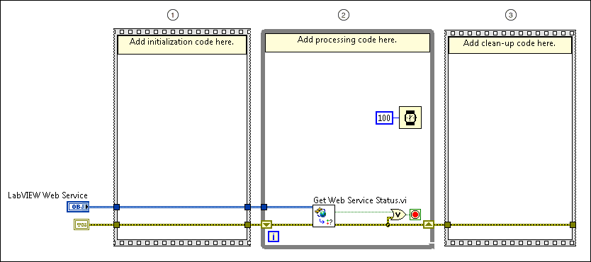

Parent Topic: Components of a Web Service
|
Note��For more information about concepts in this topic, refer to the Web services introduction and tutorial. LabVIEW Web services are available only in the LabVIEW Full Development System and the LabVIEW Professional Development System. |
Startup VIs run as part of a Web service application but do not exchange data with a web client. A startup VI runs once, when the Web service loads, and can continue to run as long as the Web service is published. Consider the following template block diagram for startup VIs:
|
 |
||||
 |
Initialization frame | Runs once to perform tasks such as loading data from a file to initialize a value. | ||
 |
Processing loop | Iterates until an error occurs or the service stopping? output of the Get Web Service Status VI returns TRUE because the Web service is stopping. Ensure the startup VI finishes executing soon after the Get Web Service Status VI indicates the Web service is stopping; otherwise, LabVIEW aborts the startup VI.
|
||
 |
Clean-up frame | Runs once after the status of the Web service is stopping. You might use clean-up code to cancel tasks that have been running a long time to avoid hanging the server. | ||
 |
Tip��To create a startup VI that uses the previous template, right-click Startup VIs under a Web service project item Project Explorer window and select New VI. |
Modify the startup VI template to meet the needs of your application. For example, consider the following changes you might make: